Crypto Squeeze Radar
正在读取最新监控数据
本地静态数据
Live anomaly scan
市场仓位异常扫描中
正在同步最新风险评分、OI 变化和清算数据。
-- 交易对
-- 最高风险
-- 发布候选

合约短线机会筛选
按 BTC 大环境、结构、量能、OI、Funding、流动性和风险收益比整理的独立观察栏目；推送通道暂不接入。
默认取 24h 成交额靠前合约，排除低流动性、K 线不足、极端 Funding 与盈亏比不足标的。
当前页面先展示栏目和候选映射，完整 BTC 4H / 1H 结构判断将在扫描器接入后显示。
BTC 15、结构 20、成交量 15、OI 15、Funding 10、流动性 10、风险收益比 15。
本栏目只做观察和交易计划展示，不自动下单；PushPlus / Telegram / 邮件提醒后续再定。
BTC 大环境
价格结构
量能确认
OI / Funding
流动性
交易计划
| 排名 | Symbol | 方向 | 可行度 | 当前价 | 24h涨跌 | 24h成交额 | 15m / 1H结构 | 量能 | OI | Funding | 入场 / 止损 / 目标 | 核心理由 | 主要风险 | 状态 |
|---|
OI 模式监控
只保留高质量方向：三类做空结构和一类强势延续做多。
高位 OI 异常 4H 空
高位、OI 快速堆积，不追已经大跌的币。
| # | 币种 | 方向 | 分数 | OI 1h | 价1h | 24h位置 | 资金费 | 样本 | 概率 | 中位 |
|---|
高位负 Funding 12H 空
高位、负资金费、成交额足，偏弱币延续。
| # | 币种 | 方向 | 分数 | OI 1h | 价1h | 24h位置 | 资金费 | 样本 | 概率 | 中位 |
|---|
空头拥挤高位放量 12H 空
高位放量后，优先观察回落。
| # | 币种 | 方向 | 分数 | OI 1h | 价1h | 24h位置 | 资金费 | 样本 | 概率 | 中位 |
|---|
强势延续 4H 多
只在非弱市、趋势延续时出现。
| # | 币种 | 方向 | 分数 | OI 1h | 价1h | 24h位置 | 资金费 | 样本 | 概率 | 中位 |
|---|
Top 异常信号
按风险评分排序，优先观察仓位拥挤与 OI 异常。
| 币种 | 评分 | 标签 | 价格 | 资金费 | OI 1h | OI 24h | 首次提示 | 首次预警价 | 预警后最大涨跌 | 后验概率 |
|---|
风险分布
最新一轮各币种评分。
风险评分趋势
最近历史记录，用于观察异常是否持续。
杠杆热度
Funding、OI 与清算组合观察。
推文审核队列
默认 dry-run，只预览不发布。
X 发布预览
展示本轮自动发布过滤结果。